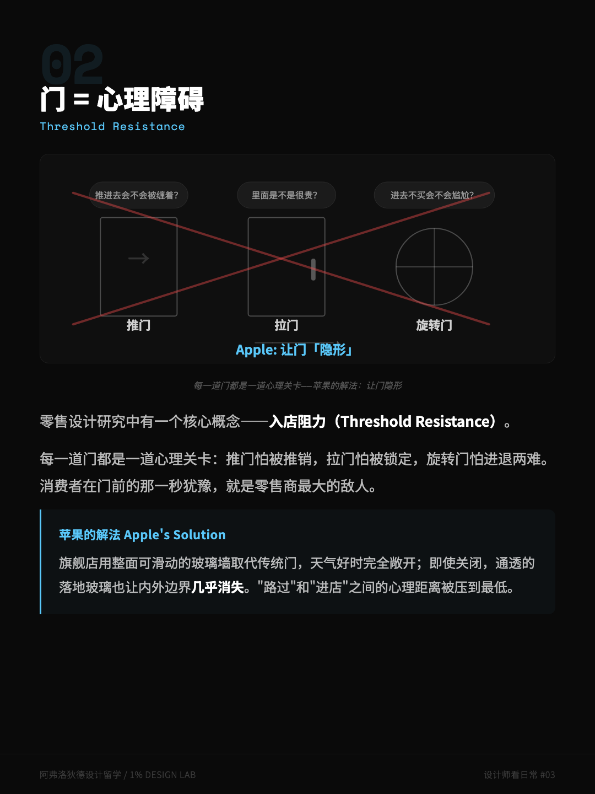

下次路过 Apple Store，停下来留意一件事，你是怎么走进去的。手上没有推门这个动作，那半秒钟的犹豫也没找到发生的地方。旗舰店干脆用整面能滑动的玻璃墙取代了门，天气好的时候整面墙打开，里外连成一片；就算关着，通透的落地玻璃也让路过和进店之间的边界，淡到几乎没有。玻璃不挡视线，也不拦脚步，你多看两眼，多走两步，就已经在店里了。这种顺滑没有错觉的成分，入口被认真设计过，认真到你看不见它。你逛完出来回想一下，会发现自己压根没进过一扇门。
我原稿里写过一句，苹果花了数十亿美元研发入口设计。这次我先把它拎出来审，这个数，查不到出处。苹果在入口上的投入之大、用心之深，肉眼可见；精确到几十亿，我只能说，存疑。这类数字最唬人的地方，是把一个方向感很强的判断，包装成了一笔能查的账。方向我可以跟你聊，账我认不了。钱数存疑，手法不存疑，这篇就讲手法。
别急着惊叹苹果真有钱。该看的是它花这么大力气，到底在抹掉一样什么东西。它抹掉的，是你推门之前那半秒钟的犹豫。犹豫没了，脚步自己就把决定做了。
每一道门都在制造犹豫，苹果的办法是取消门
零售设计里有个概念叫入店阻力（Threshold Resistance）。每一道门，都在你心里设一道关卡。门还没推开，戏已经开演了。这个概念值钱的地方，是把门从一块硬件还原成了一次心理事件。
- 要推门的店，你心里先过一遍，我推进去会不会被人盯着。推门那一下，等于当街宣布，我要进这家店了，手搭上门，决定就算做了。
- 要拉门的店，你先掂量，里面是不是很贵，进去了不买尴尬不尴尬。门越重，你掂量的时间越长。
- 旋转门最狠，站在门口你就得自问，我这身打扮，进得去吗。它连慢慢犹豫的空当都不给你，节奏必须跟着门走。
苹果的做法简单粗暴，把门隐形掉。阻力没了，犹豫也就没了。你走进苹果店，更像走进一个广场，脚步不用做决定，视线往哪儿去，人就往哪儿去。进来是顺路的，出去也是顺路的，没有哪一步需要下决心。
说句实话。入店阻力作为概念，是零售设计领域的通识；具体到一扇门挡掉百分之多少的客流，没有统一数据。我讲的是方向，没有精确比例。你要在方案里引用它，能引用的只有方向，比例谁报的都别信。
玻璃幕墙是巨型橱窗，隔着马路就开始营业
从外面看，全透明的玻璃幕墙把整个店面变成一个巨型橱窗。橱窗的本职，是让你在店外就开始惦记店里的东西，苹果把这层做绝了，橱窗连框都没有，整间店都是。你还没过马路，逛就已经开始了。
店里的每一张木桌都朝着街道摆好。产品的屏幕亮度，调到隔着马路都能看见内容。灯光经过设计，让室内比室外更亮一点。桌子朝街，屏幕朝外，灯往上打，这间店把自己摆成了街面上最亮的一块。这块亮处从人行道那头把你的视线接走，脚跟着视线走，等你反应过来，人已经站在木桌跟前。
隔着马路，你在看手机。站到店门口再看，方向反过来了，是手机在看你，用它的亮把你钩过去。钩过去的还不止眼睛。你过马路的那几步，够你在心里预演一遍，进去只看看，不买。
把这种内外边界的模糊推到极致的，是那几个建筑地标级的门店。纽约第五大道那个地下玻璃立方体，新加坡滨海湾漂在水上的玻璃球，芝加哥那面能整个升起来的玻璃墙。第五大道的店藏在地下，地面只剩那个立方体当入口，进门被折算成一段往下去的路。芝加哥那面墙整个升起来之后，店面直接敞在街上，进店这个动作就没了。它们的共同点，是让建筑本身成为品牌最大的广告。


从随便摸一路走到天才吧，信任是一段路攒出来的
注意苹果店里的空间是怎么排的。三个区，压力三种剂量，从门口往里一路递增。区与区之间没有墙，隔开它们的，是你自己的意图。
- 前区是产品展示。随便摸，没压力。你哪怕只为了蹭冷气进来，也没人拦你，摸完也没人跟你要什么。
- 中区是配件区，开始有点消费的意思了，脚步会自然慢下来，手指在货架间挑挑拣拣，掏钱的准备也在这里做完。
- 后区是 Genius Bar 天才吧。深度服务，高信任，走到这儿的人，多半带着明确的问题和一点耐心。
这套从前到后、从低压力到高信任的梯度，是经过设计的。一个只是路过的闲人，可以零压力进来摸两下，摸完就走，什么都没发生。一个带着问题来的人，会一路走到后区。等他走到那儿，他对这个品牌的信任，已经沿途攒够了。你可以自己走一遍试试，从门口到天才吧，一路上没有任何人拦你，也没有任何人要你表态。信任不靠话术攒，靠一段有节奏的路攒，前区给你好感，中区给你小件的冲动，后区接住你最大的问题。
没有一个销售员会在你刚进门的时候扑上来。这不扑上来，本身就是设计的一部分。你身上的压力小不小，走到木桌跟前就知道了。店员在等你开口，你在决定开不开口，两边都留着余地。
同一个开放空间，其实在回答四个人的诉求
- 顾客
- 我只想随便看看，别给我压力。→ 前区全开放，没人拦你。
- 产品
- 我怎么让你摸到、感受到？→ 摆在最显眼、最亮的桌上。
- 服务
- 我怎么在你不抗拒时靠近你？→ 把深度服务藏在最深处。
- 品牌
- 怎么让你进一次门就记得我？→ 让建筑本身，成为你想拍照的背景。
我把这套逻辑搬回了数字产品
苹果店是物理空间里把零摩擦进入和渐进式信任做得最好的范本。零售把进店做成了体验的第一帧，数字产品的第一帧在哪，值得每个做产品的人指给自己看一遍。能偷的有三招。
- 砍掉推门动作。你的注册、登录、新手引导里，有没有可以不要的门槛？用户还没体验到你值不值，你就先让他填一串资料。那张表单，就是数字世界里那扇又重又丑的门。用户在门外看一眼就走，你连他被劝退的记录都拿不到。资料不是不能要，等他要保存成果了再要，那时候填表是他自己的事。
- 让产品自己发光。别靠说明书说服人。用户第一眼看见的，该是一个亮着的、正在工作的成果。苹果不解释屏幕为什么亮，它就让屏幕亮着。着陆页第一屏放什么，就问一句，用户能不能隔着马路看见这块亮。
- 设计信任梯度。先让人低门槛摸到价值，再引导他往深处走。一上来就要求深度授权，等于把 Genius Bar 搬到门口，吓跑所有人。授权跟着任务走，任务做到哪一步，需要什么，就到哪一步再问。
下次你设计一个入口，给自己三个问题
App 的首页、落地页、注册流，都是你设计里的那扇门。门修得好不好，用户用脚投票，数据上看得一清二楚。
- 找那扇门。把自己当用户，从广告落地那一刻数起，数到价值出现为止，中间要推几下门？每多一下，就多一批人转身。
- 找那盏灯。用户第一眼看见的，是一个亮着的成果，还是一张说明书？前者让人靠近，后者让人走开。
- 找信任梯度。你在让人先体验再承诺，还是先承诺才让体验？前者是苹果，后者是你填不完的表单。
- 入店阻力（Threshold Resistance）、零售空间中的空间梯度与橱窗化设计，属于零售设计领域的公开讨论。
- 纽约第五大道、新加坡滨海湾、芝加哥等 Apple Store 的建筑特征均为公开可查的事实；Jony Ive 与 Angela Ahrendts 曾主导苹果零售设计，也是公开记录。
- 原稿中「数十亿美元研发入口」等表述无法查证出处，已在文中标注存疑。
- 本文基于公开可见的门店设计做分析，不代表 Apple 官方设计意图。